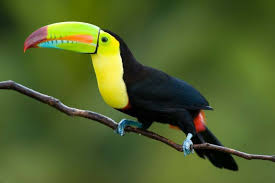

Pagina principal
Plantas de Honduras
Animales en Honduras
Parque la tigra
Biosfera del rio Plátano
Animales en Honduras
Muchas de estas especies se encuentran en via de
extincion lo cual ha planteado al gobierno
hondureño e internacionales,promover y velar por la
proteccion tanto la biodiversidad de especies,como
las reservas naturales existentes
La fauna en honduras es riquisima y varia siendo los
mas comunes los de vida arbòres y los que viven
en las corrientes fluviables agua lacustres
Los animales grandes no son muy numerosos pero hay
cierto de especies de reptiles,anfibios y pajaros
lagartos y muchas variedades de peces en las
corrientes.
